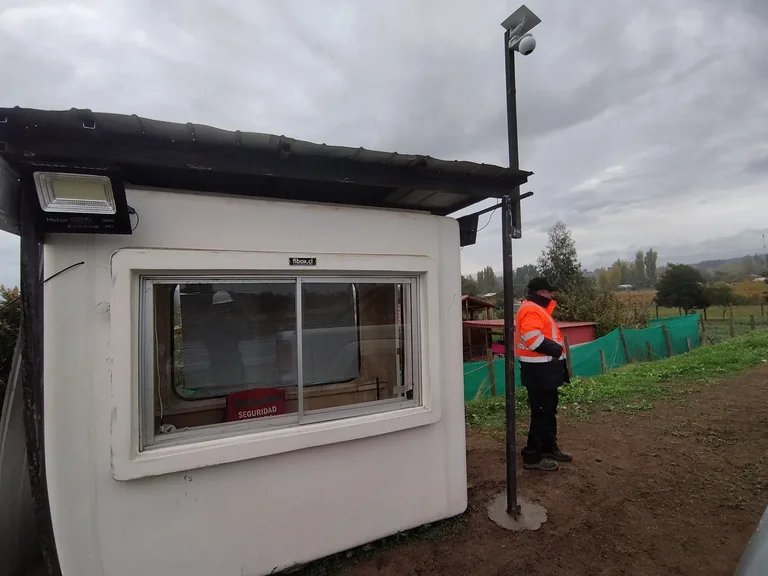

Vigilancia privada
Personal de vigilancia para instalaciones comerciales, empresariales e industriales.
Sobre vigilancia privada
Provisión, coordinación y gestión de personal para los puntos de vigilancia que requiere cada operación.
Este servicio se orienta a instalaciones comerciales, empresariales e industriales. Puede formar parte de una propuesta que también incorpore cámaras o unidades autónomas, de acuerdo con las necesidades del recinto.
Para solicitar una propuesta, describe el tipo de instalación, los puntos que necesitas resguardar y si el requerimiento corresponde a una operación permanente o a una obra o faena temporal.
Consultar por vigilancia privada